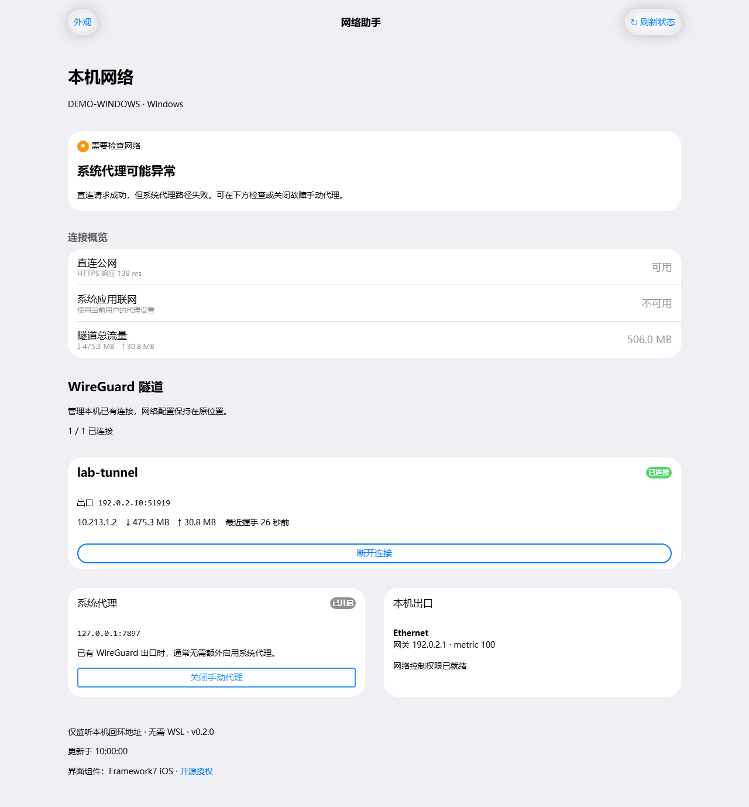
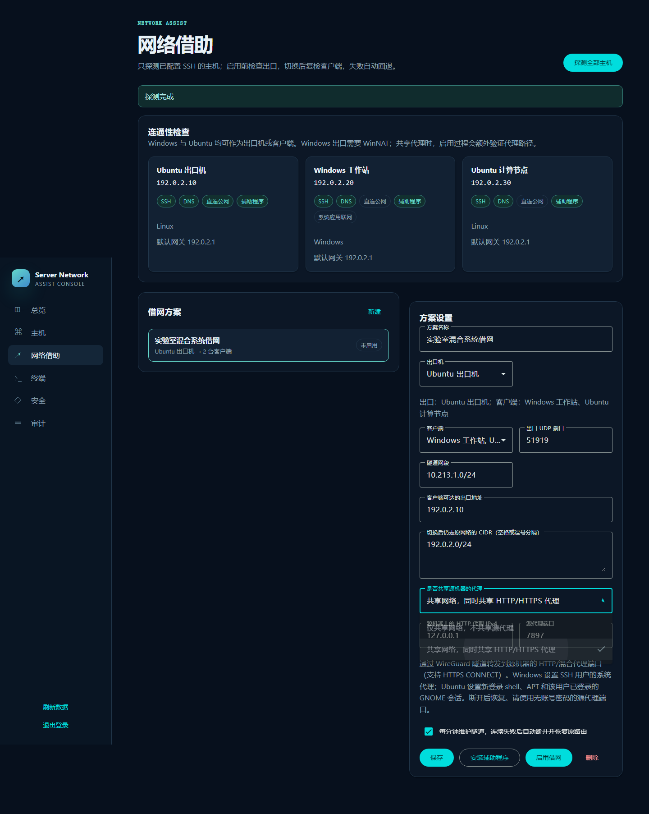
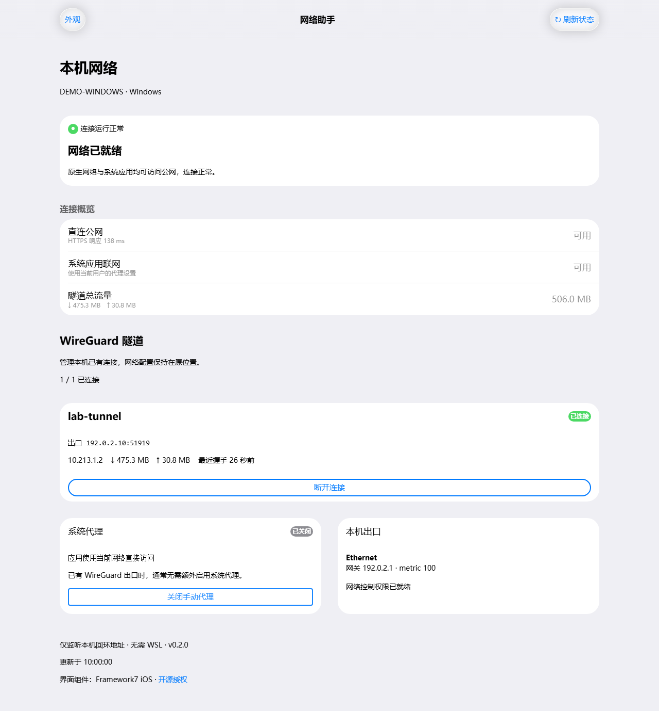

ENGINEERING JOURNAL / 001
让 Windows 与 Ubuntu，
共用一条网络。
从“WSL 能上网，Windows 却不行”开始，做一个看得清状态、选得清路径、也能恢复原网络的小工具。
网络通了，只是开始。更重要的是知道流量从哪里出去，哪些应用用了代理，以及退出共享后能否回到原来的网络。
01 / THE PROBLEM
同一台机器，为什么有两种联网结果？
这次项目里的故障很具体：服务器的 WSL 可以访问网络，但 Windows 应用仍然失败。顺着路由检查下去，问题落在了 Windows 用户的手动代理——它还指向一个不能正常提供服务的本地端口。
这件事让我们把“联网”拆成两个问题：网络本身能否到达公网？应用最终选择的路径是否可用？ 前者成功，不代表后者也成功。一个仍然开启的代理、一段 PAC 配置，或者应用自己的设置，都可能改变结果。
{kind=link}

桌面面板的“关闭手动代理”会先备份当前用户配置，再关闭开关。它不会删除代理软件的配置。只有确定不再需要该代理时才使用它；如果直连也失败，就需要继续检查 DNS、隧道和出口。
02 / THE MENTAL MODEL
共享网络，也可以选择共享代理。
一台能够联网的机器可以成为出口。其他机器通过 WireGuard 把 IPv4 流量送给它，再由出口转发到外网。Ubuntu 使用 Linux 转发和 NAT；Windows 使用原生 WireGuard 与 WinNAT，不要求安装 WSL。
应用代理是另一层。源机器上即便开着 Clash
一类软件，客户端也不能直接使用自己的
127.0.0.1:7897
来访问它——每台机器的回环地址都只代表自己。因此，共享代理需要一个通过隧道可达的入口。
仅共享网络：客户端原有代理设置保留，源机器的应用代理不会自动复制。
仅共享网络
使用出口的网络转发，不传递源应用代理。客户端已有代理保持原样，故障代理需要单独排查。
同时共享代理
填写源机器的 HTTP/混合代理端口。隧道内的转发入口连接到它，客户端使用该入口，断开时恢复设置。
03 / THE WALKTHROUGH
从三台机器，开始一次共享。
我们的示例有一台出口机、一台 Windows 工作站和一台 Ubuntu
计算节点。先确认它们能通过 SSH 管理，再选择出口。不要把文档里的
192.0.2.x 示例地址直接用于部署。
安装并打开管理台
使用当前源码。下面是 Windows PowerShell 命令；Ubuntu 用
python3 -m venv .venv 创建环境，再按 README
激活并安装。
git clone https://github.com/2667741708/server-network-assist.git
cd server-network-assist
py -3 -m venv .venv
.\.venv\Scripts\python.exe -m pip install .
.\.venv\Scripts\server-network-assist.exe init --data ./data
.\.venv\Scripts\server-network-assist.exe serve --data ./data --bind 127.0.0.1 --port 9180
浏览器访问 http://127.0.0.1:9180。首次账号保存在本机的
data/initial-login.json，按 README
完成登录与恢复密钥保管。完整安装步骤 ↗
添加主机，核对身份
添加 SSH 凭据和主机，通过可信渠道核对主机指纹。进入“网络借助”，探测全部主机，再为节点安装当前版本辅助程序。Windows 要有管理员 SSH 账号和原生 WireGuard；作为出口时还需要 WinNAT。
选择出口、客户端和代理方式
填写可达的出口地址、UDP 端口和无冲突的隧道网段。把
SSH、校园网认证或其他管理网络加入保留路由。选择“同时共享代理”时，填写源机器上的代理地址与端口，例如
127.0.0.1:7897。
{kind=link}

启用，然后验证真正要用的应用
程序先配置出口，再切换客户端，随后验证 SSH 和所选网络路径。共享代理时额外验证隧道里的代理入口。最后在浏览器、终端或下载工具中重试目标服务，不能只看隧道图标。
| 客户端 | 共享代理的生效范围 | 使用时注意 |
|---|---|---|
| Windows | SSH 账号的 Windows 用户系统代理 | 桌面需使用同一账号；独立设置代理的应用、WinHTTP 服务不自动继承。 |
| Ubuntu | 新登录 shell、APT、SSH 用户已登录的 GNOME 会话 | 已有 shell 需重新登录；非 GNOME 桌面及独立服务需单独配置。 |
源代理需支持无认证 HTTP/CONNECT；仅 SOCKS、PAC 或认证代理需要另行适配。源服务关闭或代理路径失败时，共享不会自动切成直连来隐藏问题。
04 / EVERYDAY USE
复杂的配置，留给第一次。
日常更常见的操作是查看状态。安装桌面面板后，在 Windows
双击“服务器网络助手”，就能看到直连、系统应用联网、最近握手和隧道流量。Ubuntu
也可以运行
server-network-assist-desktop，网络控制需要相应权限。
{kind=link}

窗口关闭后隧道继续运行。“断开连接”只控制选中的 WireGuard 服务，不删除配置。新建方案、切换出口和完整清理仍使用管理台。它是一个网络状态面板，不包含 Clash 的订阅管理、规则编辑或系统托盘菜单。
05 / RECOVERY MATTERS
把“回到原来”，也做成一条路径。
改变默认流量路径时，最不应该丢掉的是回来的路。客户端切换前会保留管理路由，并设置确认窗口。复检失败时触发回退；维护检查持续失败时也会停用共享。
完整结束共享，请在管理台点击“断开并恢复原网络”。它会清理本方案的隧道、临时路由、转发资源和代理配置。如果清理失败，界面会保留错误状态，恢复记录也会留在节点上，便于重试。
对于我们，这个项目的价值不是再增加一个“已连接”的标记，而是把连接背后的路径和退出方式都交代清楚。这样下一次网络失灵时，排查可以从证据开始。
06 / KEEP EXPLORING
文章到这里，项目继续更新。
博客记录这次实践和设计选择；GitHub 维护最新安装步骤、功能边界与代码。如果两处说明出现差异，以对应版本的仓库文档为准。
排版与行文参考
参考 Josh W. Comeau 的博客实现文章中把交互示例放进讲解的方式、Overreacted用标题、日期与短摘要组织内容的方式，以及 Paul Graham 的文章索引所体现的正文优先思路。本页文章、图示和样式为本项目制作，未搬运这些站点的文章、品牌素材或源码。